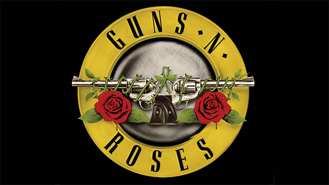
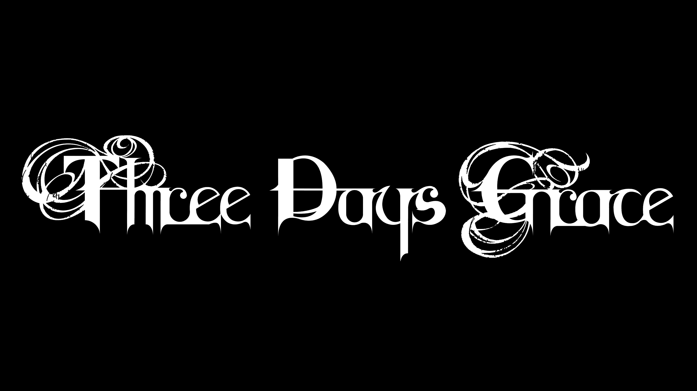
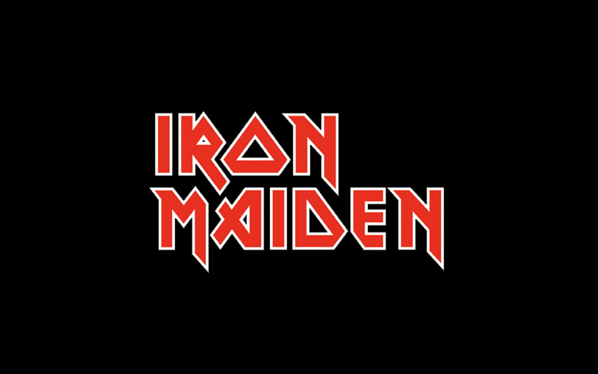
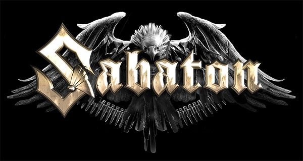
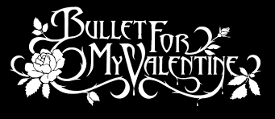

  
 
| Műfaj név | Kedvenc bandám a műfajból | Rövid leírás a bandáról | Műfaj ismertető link | YouTube link |
|---|---|---|---|---|
| Rock | AC/DC | Az együttes a rock zenei műfaj úttörője, kiemelkedő csapata. Számos tagcsere után 1975-re alakult ki első stabil felállásuk – Malcolm Young ritmusgitáros, Angus Young szólógitáros, Bon Scott énekes, Phil Rudd dobos, Mark Evans basszusgitáros – és kiadták első albumukat High Voltage címmel. Ugyanebben az évben még egy, T.N.T. című lemezt is kiadtak. A két anyag hamar sikert aratott, ennek köszönhetően lehetőségük nyílt Európában is koncerteket adni. Így egy szélesebb réteg is megismerhette az AC/DC zenéjét. | Rock stílus ismertetői | AC/DC - High Way To Hell |
| Hard Rock | Guns N' Roses | A Guns N’ Roses amerikai hard rock együttes, amelyet 1985-ben alapítottak a kaliforniai Los Angelesben. Amikor 1986-ban leszerződtek a Geffen Recordshoz, a zenekar Axl Rose énekesből, Slash szólógitárosból, Izzy Stradlin ritmusgitárosból, Duff McKagan basszusgitárosból és Steven Adler dobosból állt. A jelenlegi felállás Rose, Slash, McKagan, Richard Fortus gitáros, Frank Ferrer dobos, valamint Dizzy Reed és Melissa Reese billentyűsökből áll. | Hard Rock stílus ismertetői | Guns N' Roses - Sweet Child O' Mine |
| Alternatív Rock | Three Days Grace | A Three Days Grace (rövidítve, illetve stilizálva: 3DG) kanadai rockegyüttes. Post-grunge, alternatív metal és hard rock műfajokban játszanak, korábban nu metalt is játszottak. 1992-ben alakultak meg az ontariói Norwoodban, Groundswell néven. Ezt az elnevezést 1995-ig használták. 1997-ben változtatták meg Three Days Grace-re. A zenekar tagjai szerint a névválasztás azzal a kérdéssel áll kapcsolatban, hogy az ember meg tudná-e változtatni az életét három nap alatt. Díjakat is nyertek dalaikért és albumaikért. Magyarországon is népszerű a zenekar. | Alternatív Rock stílus ismertetői | Three Days Grace - Animal I Have Become |
| Heavy Metál | Iron Maiden | Az Iron Maiden egy angol heavy metal együttes, a világszerte több mint 100 millió eladott lemezével a műfaj egyik legsikeresebb képviselője.[1][2][3][4] Az együttest Steve Harris basszusgitáros alapította 1975-ben, aki korábban a Gypsy's Kiss és a Smiler együttesek tagja volt. Az 1970-es évek végén kibontakozó New Wave of British Heavy Metal hullámmal kerültek be a köztudatba, debütáló lemezük pedig Iron Maiden címmel 1980-ban jelent meg. Több tagcserét követően arany- és platinalemezek sorát adták ki, a The Number of the Beast (1982), a Piece of Mind (1983), a Powerslave (1984), a Somewhere in Time (1986), és a Seventh Son of a Seventh Son (1988) albumokkal a heavy metal megkerülhetetlen klasszikusaivá váltak, a zenekar pedig kereskedelmi sikereinek csúcsára ért. Az 1990-es években tagcserék és a zenei klíma változása nehezítették az együttes munkáját, de a 2000-es évektől kezdve ismét egyre sikeresebbek. | Heavy Metal ismertetői | Iron Maiden - Fear of the Dark |
| Thrash Metal | Metallica | A Metallica amerikai thrash metal zenekart James Hetfield és Lars Ulrich alapította 1981-ben Los Angelesben. Az utóbbi évtizedek egyik legsikeresebb együttese, az 1980-as és az 1990-es évek meghatározó zenekara. | Thrash Metal ismertetői | Metallica - Master of Puppets |
| Power Metal | Sabaton | A Sabaton egy svéd heavy metal/power metal együttes, amely 1999-ben alakult Falunban és azóta nyolc stúdióalbumot, két válogatáslemezt, egy koncertalbumot és két élő DVD/Blu-ray kiadványt adott ki. Számaik többsége történelmi harcokat, háborúkat dolgoz fel. Epikus hangzásukat kórusokkal teszik teljessé. Dalaikban gyakran jelennek meg gitárszólók, szintetizátorszólók. Az együttes neve a lovagi páncélzat lábfejet védő vassarujából származik. 2019. július 19-én jött ki a The Great War albumuk. | Power Metal ismertetői | Sabaton - The Red Baron |
| Metalcore | Bullet for My Valentine | Bullet for My Valentine, gyakran rövidítve BFMV, egy walesi heavy metal együttes Bridgendből, amelyet 1998-ban alapítottak. Az együttest jelenleg Matthew Tuck (vezető ének, ritmusgitár), Michael Paget (szólógitár, háttérének), Jason Bowld (dobok) és Jamie Mathias (basszusgitár, háttérének) alkotja. Korábbi tagok közé tartoznak Michael Thomas, Jason James és Nick Crandle; utóbbi a basszusgitáron játszott. Jeff Killed John néven alakultak és zenekaruk karrierjüket a Metallica és Nirvana dalok feldolgozásával kezdték. A Jeff Killed John hat dalt rögzített, amelyeket nem adtak ki; ezek közül kettő később átdolgozásra került Bullet for My Valentine néven. A stílusváltás a Jeff Killed John-tól vezetett ahhoz, hogy az együttes megváltoztassa a nevét. 2002-ben az együttes öt albumos szerződést kötött a Sony BMG-vel. Az együttes kijelentette, hogy zenéjüket olyan klasszikus metal előadók befolyásolják, mint a Metallica, Iron Maiden és Slayer. Az együttes része a Cardiff-i zenei színtérnek. | Metalcore ismertetői | Bullet For My Valentine - Omen |